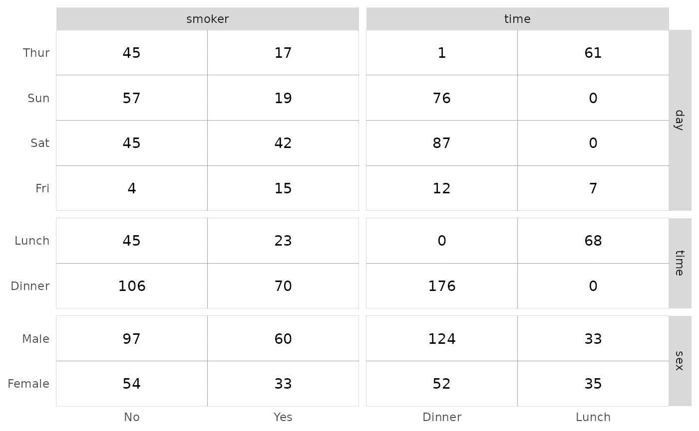

ggtable(): Cross-tabulated tables
Joseph Larmarange
May 16, 2016
Source:vignettes/ggtable.Rmd
ggtable.Rmd
GGally::ggtable()
The purpose of this function is to quickly plot cross-tabulated tables of discrete variables.
Basic example
To display tables with the number of observations, simply indicate variables to present in columns and in rows.

Proportions
The cells argument allows you to control what to
display. For proportions of the total, row proportions or columns
proportions, simply use "prop", "row.prop" or
"col.prop".


Filling cells with residuals
Chi-square standardized residuals indicates which cells are over- or underrepresented compared to what would be expected under the independence hypothesis. If the standardized residual is less than -2, the cell’s observed frequency is less than the expected frequency. Greater than 2 and the observed frequency is greater than the expected frequency. Values lower than -3 or higher than 3 indicates a strong effect.
To fill cells with standardized residuals, simply indicate
fill = "std.resid".
Using weights
You can easily indicate weights to take into account with the weight aesthetic.
d <- as.data.frame(Titanic)
ggtable(
d,
"Survived",
c("Age", "Class", "Sex"),
mapping = aes(weight = Freq),
cells = "row.prop",
fill = "std.resid"
)